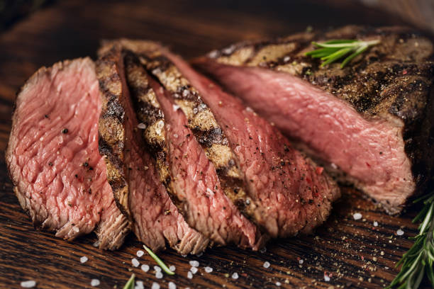

Steak

Steak on stovetop
This is one of my favorite recipes to enjoy after a long weekend. A delicious and aromantic steak recipe, yet simple with common ingridients.
Cooking steak on the stovetop is one of my go-to preparations for a quick and easy weeknight dinner. It can get the house smokey, but stovetop steak is easier than fussing with an outdoor grill and provides just as good, if not better, results. Just make sure you turn on the exhaust hood and open a window
Ingredients
- One one steak, one inch, such as ribeye
- Kosher salt
- Two tablespoons of unsalted butter
- A few sprigs of fresh rosemary and thyme
Steps
- Pat the steak dry using a paper towel. This will help you get a better crust.
- Heat the skillet. You want to make sure youre cocking at a high temperature.
- Sear both sides of the steak for two minutes.
- Toss in your butter and herbs. Continusly base your steak with the butter for an addition minute.